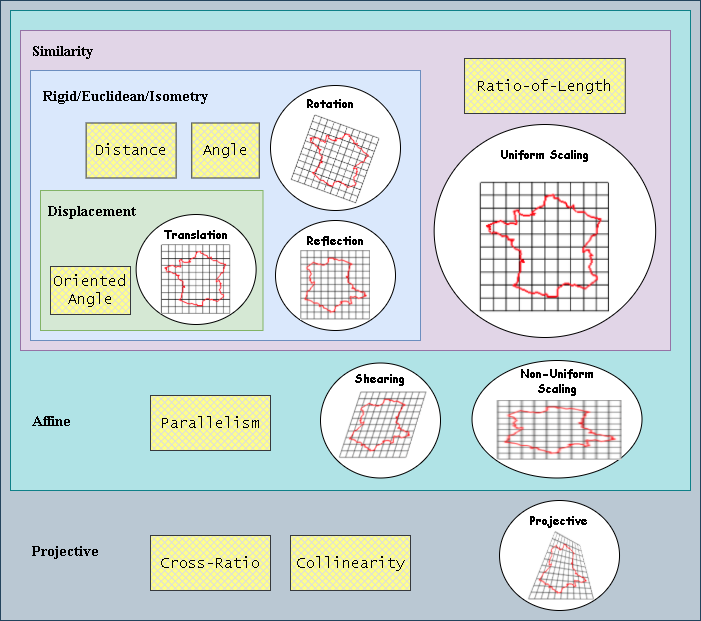
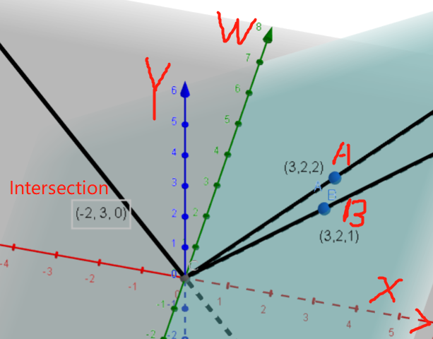
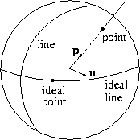
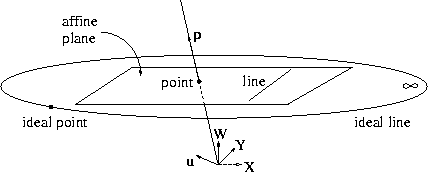
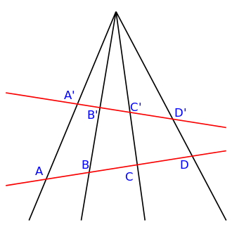
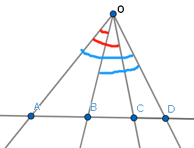

Projective geometry exists in \(\mathbb R^n\), same as Euclidean geometry. A projective line \(\cal P^{1}\) is analogous to a 1D Euclidean world; a projective plane \(\cal P^2\) corresponds to the Euclidean plane and a projective space \(\cal P^{3}\) is related to a 3D Euclidean space. Under such notions, imaging could be treated as a process that projecting from \(\cal P^3\) to \(\cal P^2\).
Euclidean geometry is actually a subset of projective geometry. And there are two geometries between them: similarity and affine. Projective geometry models well the imaging process of a camera because it allows a much larger class of transformations than others mentioned above. As tradeoff, the drawback is that fewer measures are preserved -- certainly not lengths, angles, or parallelism. Projective transformations preserve type (e.g. points remain points and lines remain lines), incidence (e.g. whether a point lies on a line), and cross ratio only.
Relationship between transformation, geometry, and preserved property: 
The Projective Plane
Four Models
Homogeneous coordinates
A point in an n-dimensional Euclidean space is represented as a point in an (n+1)-dimensional projective space.
Assume a point \([x, y]^T\) in Euclidean plane, the same point in the projective plane will be \([\alpha x, \alpha y, \alpha]^T \quad \forall \alpha \ne 0\). This also indicates that \([X,Y,W]^T = [\alpha X, \alpha Y, \alpha W]^T \quad \forall \alpha \ne 0\). Thus the point \([0, 0, 0]^T\) is undefined in projective plane.
For a point \([X,Y,W]^T\) in the projective plane, the corresponding point in Euclidean plane is \([X/W,Y/W]^T\). As scaling preserves the position of the point in Euclidean plane. Therefore \([X,Y,W]^T\) is called the homogeneous coordinate of a point.
The projective plane contains more points than the Euclidean plane (not all points could be transformed back): \(W = 0\) make the transform undefined. Points with the form \([X, Y, 0]^T\) are called ideal points, or points at infinity. All the ideal points lie on a line, called the ideal line, or the line at infinity. Ideal line is represented as \([0,0,1]^T\). Ideal points or lines are considered just like any other points or lines without any special treatment.
Dot Product
The line \(ax + by + c = 0\) in Euclidean plane could be expressed as \(aX + bY + cW = 0\) where \(Wx = X, Wy = Y\). The parameters of the line keeps invariant: \(-a/b\) is the slope, \(-c/a\) is the x-intercept, and \(-c/b\) is the y-intercept.
The line could be re-written as the format of dot product \(\mathbf{u}^T \mathbf{p} = 0\) where \(\mathbf{u} = [a, b, c]^T\) and \(\mathbf{p} = [X,Y,W]^T\).
We see that points and lines have the same representation in the projective plane.
Cross Product
Given two lines \(\mathbf{u}_1=[a_1,b_1,c_1]^T\) and \(\mathbf{u}_2=[a_2,b_2,c_2]^T\), the intersection is \(\mathbf{p}=\mathbf{u}_1\times\mathbf{u}_2\). If the two lines are parallel, the intersection is simply \([b_1c_2-b_2c_1,a_2c_1-a_1c_2,0]^T\), which is the ideal point associated with the direction whose slope is \(-a_1/b_1\). Similarly, given two points \(\mathbf{p}_1\) and \(\mathbf{p}_2\), the equation of the line passing through them is \(\mathbf{u}=\mathbf{p}_1\times\mathbf{p}_2\).

Similarly, if three points lie on the same line:
\[\begin{vmatrix}\mathbf{p}_1 & \mathbf{p}_2 & \mathbf{p}_3 \end{vmatrix} = 0\]
If three lines intersect at the same point:
\[\begin{vmatrix}\mathbf{u}_1 & \mathbf{u}_2 & \mathbf{u}_3 \end{vmatrix} = 0\]
Duality
The similarities between points and lines are striking: Their representations are identical; The formula for the intersection of two lines is the same as the formula for the connecting line between two points. The duality exists between points and lines in the projective plane. Any theorem or statement that is true for the projective plane can be reworded by substituting points for lines and lines for points.
Ray space
A point \([x, y]^T\) in Euclidean plane could be transformed into \([X, Y, W]^T\) in projective plane where \(X = Wx, Y = Wy\) which can be visualized as a line in three-dimensional space passing through the origin and the point \([X, Y, W]^T\) (exclude the origin). This three-dimensional space is known as the ray space. Similarly, a line \(\mathbf{u}=[a,b,c]^T\) can be visualized as a plane perpendicular to it as well as passing through the origin (exclude the origin). The ideal line is the horizontal \(W=0\) plane, and the ideal points are lines in this plane.
The unit sphere
\(\cal P^2\) is actual a two-dimensional space, which is topologically equivalent to a sphere. A point \(\mathbf{p}=[X,Y,W]^T\) can be projected onto the unit sphere to obtain the point \(\frac{1}{\sqrt{X^2+Y^2+W^2}}[X,Y,W]^T\). A line \(\mathbf{u}=[a,b,c]^T\) is the great circle perpendicular to it. The ideal line is the great circle around the horizontal midsection of the sphere, and the ideal points lie on this circle.

Augmented affine plane
Explicitly, it is defined by the projection from the unit sphere onto the plane \(W=1\). Each point \([X,Y,W]\) is thus mapped to the point \([\frac{X}{W},\frac{Y}{W},1]\). Lines return to lines after that. Ideal points and the ideal line are projected, respectively, to points at infinity (one for each direction) and the line at infinity.

Pencil of lines
A set of lines passing through the same point, is a one-dimensional projective space called a pencil of lines.
Cross Ratio
Given four collinear points \(A, B, C, D\) in \(\cal P^2\), one definition of the cross ratio is the following:
\[(A,B;C,D)={\frac {AC\cdot BD}{BC\cdot AD}}\]
where \(AC, BD, BC, AD\) is the Euclidean distance between the corresponding points. Given two points \(P=[X_i,Y_i,W_i]^T\), \(Q=[X_j,Y_j,W_j]^T\), then \[PQ = \sqrt{(\frac{X_i}{W_i}-\frac{X_j}{W_j})^2+(\frac{Y_i}{W_i}-\frac{Y_j}{W_j})^2}\]

If one of the points has a zero entry, simply cancel the terms containing the point. For example, if \(W_B=0, W_A,W_C,W_D \ne0\), then \(BC = BD = \infty\), which cancel each other, i.e. \((A,B;C,D)={\frac {AC}{BC}}\)
Proof of Invariance under projective transformation

\[\begin{aligned} \frac{AC}{BC} \cdot \frac{BD}{AD} &= \frac{S_{AOC}}{S_{BOC}} \cdot \frac{S_{BOD}}{S_{AOD}} \\ &= \frac{\sin \theta_{AOC} \cdot OA \cdot OC} {\sin \theta_{BOC} \cdot OB \cdot OC} \cdot \frac{\sin \theta_{BOD} \cdot OB \cdot OD}{\sin \theta_{AOD} \cdot OA \cdot OD} \\ &= \frac{\sin \theta_{AOC}}{\sin \theta_{BOC}} \cdot \frac{\sin \theta_{BOD}}{\sin \theta_{AOD}} \end{aligned}\]
Properties
- \((A, B; C, D) < 0\) if and only if exactly one of the points \(C, D\) lies between the points \(A, B\)
- \((A, B; C, D) = 1 / (A, B; D, C)\)
- \((A, B; C, D) = (C, D; A, B)\)
- \((A, C; B, D) = 1 - (A, B; C, D)\)
- \((A, B; C, D) ≠ (A, B; C, E) \Leftrightarrow D \ne E\)
Conics
The second-order conic sections (ellipses, parabolas, and hyperbolas) lose their distinction in projective geometry because they are all projectively equivalent.
The equation of a conic is given by: \[\mathbf{p}^TC\mathbf{p} = 0\] or \[c_{11}X^2 + c_{22}Y^2 + c_{33}W_2 + 2 \cdot c_{12}XY + 2 \cdot c_{13}XW + 2 \cdot c_{23}YW=0\]
where \(\mathbf{p}\) is a \(3 \times 1\) vector and \(C\) is a symmetric \(3 \times 3\) matrix.
A conic is a self-dual figure: it can be considered as an envelope of tangent lines and the equation for the envelope of lines is \(\mathbf{u}^T\frac{C^{-1}}{|C|}\mathbf{u}\).
Absolute Points
A circle is a conic satisifies \(X^2 + Y^2 + W^2 = 0\), which intersects the ideal line \(W=0\) at \(X^2 + Y^2 = 0\). This equation has two complex roots \([1, i, 0]^T\) and \([1, -i, 0]^T\), known as the absolute points. Later will show you the absolute points remain invariant under similarity transformations, which makes them useful for determining the angle between two lines.
Similarity Transformation
A transformation is a similarity transformation if and only if it preserves the absolute points, \([1, \pm i, 0]^T\), which is in the form
\[T_{similarity} = \begin{bmatrix}\cos\theta&\sin\theta&t_{13}\\-\sin\theta&\cos\theta&t_{23}\\0&0&t_{33}\end{bmatrix}\]
Note that uniform scaling is unimportant, which could be cancelled by dividing \(t_{13}, t_{23}, t_{33}\) with the scalar.
Proof
- The "only if" is obvious. Given absolute point \(\mathbf{p} = [1, i, 0]^T\): \[\begin{aligned}T_{similarity}\mathbf{p}&=[\cos\theta+\sin\theta i,-\sin\theta+\cos \theta, 0]\\&=e^{i\theta}[1, i, 0]^T\end{aligned}\] which is equivalent because the scale factor is ignored. Similarly for \([1, -i, 0]^T\)
- The "if" starts with the unrestricted equation for \(T\). Given absolute point \(\mathbf{p} = [1, i, 0]^T\): \[T\mathbf{p}=T\begin{bmatrix}1\\i\\0\end{bmatrix}=\begin{bmatrix}t_{11}+t_{12}i\\t_{21}+t_{22}i\\t_{31}+t_{32}i\end{bmatrix}=\begin{bmatrix}1\\i\\0\end{bmatrix}\] which yields \[\begin{aligned} \frac{t_{11}+t_{12}i}{t_{21}+t_{22}i} &= \frac{1}{i} \\ t_{31} + t_{32}i &= 0 \end{aligned}\] Since elements of \(T\) are real number, we get the following constraints: \[\begin{aligned} t_{11} &= t_{22} \\ t_{12} &= - t_{21} \\ t_{31} = t_{32} &= 0 \end{aligned}\] Given two arbitrary \(t_{11}, t_{12}\), we can always reparameterize them as \(t_{11} = k\cos \theta\) and \(t_{12} = k\sin \theta\), where \(\theta\) is an angle and k is a scalar. Multiplying the previous equation by \(1/k\), we then get the similarity matrix.
Laguerre formula -- Angle and Cross-ratio
Given two lines \(\mathbf{u}_1\) and \(\mathbf{u}_2\) which intersect the ideal line at two points, \(\mathbf{p}_1\), \(\mathbf{u}_2\), the cross ratio between these two points and the two absolute points \(\mathbf{i}\) and \(\mathbf{j}\) yields the directed angle \(\theta\) from the second line to the first:
\[\theta = \frac{1}{2i}\log{(\mathbf{p}_1,\mathbf{p}_2;\mathbf{i},\mathbf{j})}\]
Proof
Given two lines \(\mathbf{u}_1 = [a_1, b_1, c_1]^T\), \(\mathbf{u}_2 = [a_2, b_2, c_2]^T\), the tangent of the angle between is
\[\begin{aligned} \tan\theta &= \frac{\sin\theta}{\cos\theta} \\ &= \frac{\begin{bmatrix}\frac{a_1}{c_1}\\\frac{b_1}{c_1}\end{bmatrix}\times\begin{bmatrix}\frac{a_2}{c_2}\\\frac{b_2}{c_2}\end{bmatrix}}{\begin{bmatrix}\frac{a_1}{c_1}\\\frac{b_1}{c_1}\end{bmatrix}\cdot\begin{bmatrix}\frac{a_2}{c_2}\\\frac{b_2}{c_2}\end{bmatrix}} \\ &= \frac{a_1b_2 - a_2b_1}{a_1a_2 + b_1b_2} \end{aligned}\]
In projective plane. the intersections with the ideal line \([0, 0, 1]^T\) are \(\mathbf{p}_1 = [1, -\frac{a_1}{b_1}, 0]^T\) and \(\mathbf{p}_2 = [1, -\frac{a_2}{b_2}, 0]^T\) (via cross product). Then
\[\begin{aligned} (\mathbf{p}_1,\mathbf{p}_2;\mathbf{i},\mathbf{j}) &= \frac{\frac{a_1}{b_1} + i}{\frac{a_1}{b_1} - i} \cdot \frac{\frac{a_2}{b_2} - i}{\frac{a_2}{b_2} + i} \\ &= \frac{(a_1a_2 + b_1b_2) + (a_2b_1 - a_1b_2)i}{(a_1a_2 + b_1b_2) + (a_1b_2 - a_2b_1)i} \\ &= e^{2i \arctan \tan\theta} \end{aligned}\]
Collineations
A collineation of \(\cal P^2\) is a transformation from the plane to itself where the collinearity of any set of points is preserved. It can be achieved by multiplicating with a \(3 \times 3\) matrix \(T\) such that \(\mathbf{p} ' = T \mathbf{p}\)
Only eight elements of \(T\) are independent as scaling is unimportant; Four pairs of corresponding points are necessary to determine \(T\).
When transforming a line \(\mathbf{u}\) to a line \(\mathbf{u}'\), the collinearity must be preserved, that is, if a point \(\mathbf{p}\) lies on the line \(\mathbf{u}\), then \(\mathbf{u}'\) must lie on \(\mathbf{u}'\). Given \(\mathbf{u}\) and \(T\), the points on \(\mathbf{u}\) satisify \(\mathbf{u}^T\mathbf{p} = 0\), then
\[ \begin{aligned} \mathbf{p}^T\mathbf{u} = ({T^{-1}\mathbf{p}}^T)(\mathbf{p}') = (\mathbf{p}^T)(T^{-T}\mathbf{u}) &= 0 \\ \mathbf{u}' &= T^{-T}\mathbf{u} \end{aligned} \]
Similarly, a point conic \(C\) transforms to \(T^{-T}CT^{-1}\), and a line conic \(\frac{|C|}{C^{-1}}\) transforms to \(T\frac{C^{-1}}{|C|}T^T\).
Affine Transformation
\[ T_{projective} = \begin{bmatrix}t_{11} & t_{12} & t_{13} \\ t_{21} & t_{22} & t_{23} \\ 0 & 0 & t_{33}\end{bmatrix} \]
The affine plane is just the projective plane minus the ideal line, i.e. the ideal line and the ideal points are preserved:
\[\alpha\begin{bmatrix}X \\ Y \\ 0\end{bmatrix} = T\begin{bmatrix}X \\ Y \\ 0\end{bmatrix}\]
where once again only six of these parameters are independent; The scale is unimportant.
Projective Space
All of the concepts that we have discussed for the projective plane have analogies in projective space:
- There is a duality between points and planes, lines are self-dual.
- A pencil of planes is a two-dimensional projective space.
- The cross ratio between planes is invariant.
- Quadrics play the same role as conics, the absolute conic remains invariant under. similarity transformations, and the Laguerre formula can be used to find the angle between two projection rays.
- A point in \(\cal P^3\) is represented by a 4-tuple \(\mathbf{p} = (X,Y,Z,W)\), and similarly for a plane \(\mathbf n\). Not surprisingly, a point lies in a plane if and only if \(\mathbf{p}^T\mathbf{n}=0\).
Line Representation: The Plücker relations
Given two points \(\mathbf{p}_1 = [X_1, Y_1, Z_1, W_1]^T\) and \(\mathbf{p}_2 = [X_2, Y_2, Z_2, W_2]^T\), in Euclidean space, their representation are \(\bar{\mathbf{p}}_1 = [X_1/W_1, Y_1/W_1, Z_1/W_1]^T\) and \(\bar{\mathbf{p}}_2 = [X_2/W_2, Y_2/W_2, Z_2/W_2]^T\) respectively, and the line passes through these two could be defined by the direction \(\bar{\mathbf{p}}_2-\bar{\mathbf{p}}_1\) and the distance from the line to the origin \(\bar{\mathbf{p}}_2\times\bar{\mathbf{p}}_1\). Therefore, we could find \(\mathbf{u}=(l_{41}, l_{42},l_{43},l_{23},l_{31},l_{12})\) such that
\[ \begin{bmatrix} l_{41}\\ l_{42}\\ l_{43}\\ \hline l_{23}\\ l_{31}\\ l_{12} \end{bmatrix} = \begin{bmatrix} \bar{\mathbf{p}}_2-\bar{\mathbf{p}}_1 \\ \hline \bar{\mathbf{p}}_2\times\bar{\mathbf{p}}_1 \end{bmatrix} = \begin{bmatrix} \frac{X_2}{W_2} - \frac{X_1}{W_1} \\ \frac{Y_2}{W_2} - \frac{Y_1}{W_1} \\ \frac{Z_2}{W_2} - \frac{Z_1}{W_1} \\ \hline \frac{Y_1Z_2 - Y_2Z_1}{W_1W_2} \\ \frac{Z_1X_2 - Z_2X_1}{W_1W_2} \\ \frac{X_1Y_2 - X_2Y_1}{W_1W_2} \end{bmatrix} = \frac{1}{W_1W_2} \begin{bmatrix} W_1X_2 - W_2X_1 \\ W_1Y_2 - W_2Y_1 \\ W_1Z_2 - W_2Z_1 \\ \hline Y_1Z_2 - Y_2Z_1\\ Z_1X_2 - Z_2X_1 \\ X_1Y_2 - X_2Y_1 \end{bmatrix}\]
It's clear that \(l_{ij}\) is determined by the determinant of the i_th and j_th rows of the two points. And the six parameters are not independent to each other as \((\bar{\mathbf{p}}_2-\bar{\mathbf{p}}_1) \cdot (\bar{\mathbf{p}}_2\times\bar{\mathbf{p}}_1) = 0\)
Line Intersection
Given two lines \(\mathbf{u}\) and \(\mathbf{u}'\), two points \(\mathbf{p}_1\), \(\mathbf{p}_2\) lie on \(\mathbf{u}\) and two points \(\mathbf{p}_1'\), \(\mathbf{p}_2'\) lie on \(\mathbf{u}'\), the two line intersect if and only if the \(4\times4\) determinant \(\begin{vmatrix} \mathbf{p}_1 &\mathbf{p}_2 & \mathbf{p}_1' & \mathbf{p}_2' \end{vmatrix}\) is zero. (They could define a plane, equivalently, \(\mathbf{u}\cdot(\mathbf{p}_2'\times\mathbf{p}_1') = \mathbf{u}'\cdot(\mathbf{p}_2\times\mathbf{p}_1)\)). Under the Plücker coordinates it will be \[(l_{41}l_{23}'+l_{41}'l_{23}) + (l_{42}l_{31}'+l_{42}'l_{31}) + (l_{43}l_{12}'+l_{43}'l_{12}) = 0\]